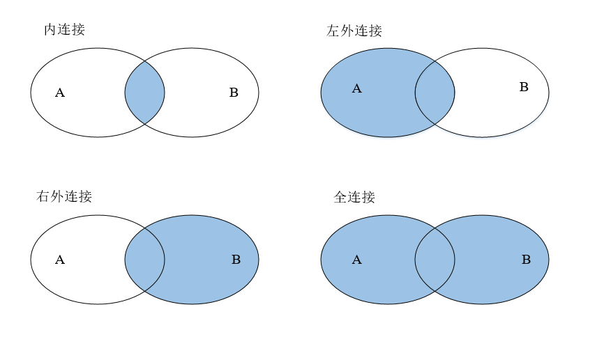

数据挖掘的数据往往分布在不同的数据源中，数据集成就是将多个数据源合并存放在一个一致的的数据存储中的过程。而在R中，数据集成主要体现在数据集的合并，大体上可分为纵向合并和横向合并。
1 纵向合并
在实际数据分析的过程中，特别是在时间序列分析中，我们通常需要一段连续时间内变量的数据来对实际问题进行分析与处理。此时，对具有相同列变量的多个数据集进行纵向合并就显得尤为重要。而根据实际，纵向合并又可分为直接纵向合并与间接纵向合并。
（1）直接纵向合并
当具有相同列变量的多个数据集没有冗余字符时，就可以对其进行直接纵向合并。
（2）间接纵向合并
事实上，在实际数据合并的过程中，数据往往是从网上爬取的，数据集的内容是夹杂着一些冗余信息的，如数据集的来源、时期等。此时，为了去除这些冗余信息，需要对原数据集进行一些处理才能进行纵向合并，即间接纵向合并。
2 横向合并
相比于纵向合并，横向合并所涉及的情况会显得更加复杂一些，合并方式大体可分为内连接、左外连接、右外连接以及全连接，这四种连接方式的图示:

A、B是两个不同的数据集。当确定数据集A和B中需要合并的字段时，内连接式合并则是合并数据集A和数据集B中的交集部分；左/右外连接式合并则是合并数据集A/B中的部分；全连接式合并则是合并数据集A、B所有的部分。